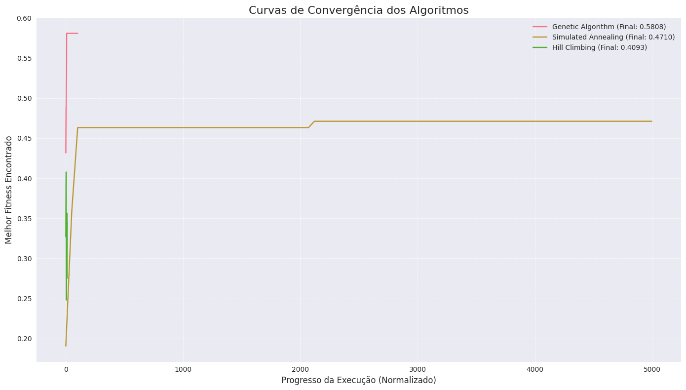
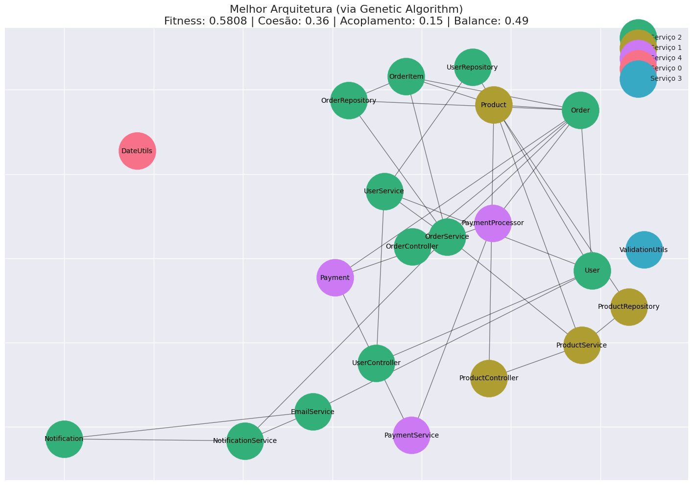

Workshop Prático: Técnicas de Otimização em SBSE#
Objetivo: Implementar e comparar algoritmos de otimização para resolver o problema de decomposição automática de arquitetura de microsserviços.
Problema: Dado um conjunto de classes Java com suas dependências, encontrar a melhor decomposição em microsserviços que maximize coesão interna e minimize acoplamento entre serviços.
Configuração do Ambiente#
# Instalação de dependências
!pip install numpy matplotlib seaborn networkx pandas plotly -q
[notice] A new release of pip is available: 25.0.1 -> 25.3
[notice] To update, run: pip install --upgrade pip
# Configurações para usar CPU e silenciar logs
import os
os.environ['CUDA_VISIBLE_DEVICES'] = ''
import warnings
warnings.filterwarnings('ignore')
# Imports principais
import numpy as np
import matplotlib.pyplot as plt
import seaborn as sns
import networkx as nx
import pandas as pd
import random
from typing import List, Tuple, Dict, Optional
from dataclasses import dataclass
from abc import ABC, abstractmethod
import copy
import math
from collections import defaultdict
# Configurações de visualização
plt.style.use('seaborn-v0_8')
sns.set_palette("husl")
random.seed(42)
np.random.seed(42)
print("✅ Ambiente configurado com sucesso!")
print("🔧 Usando CPU apenas")
print("📚 Bibliotecas carregadas")
✅ Ambiente configurado com sucesso!
🔧 Usando CPU apenas
📚 Bibliotecas carregadas
Parte 1: Representação do Problema e Função de Fitness#
Primeiro, vamos implementar a representação do problema de decomposição de microsserviços e criar uma função de fitness robusta.
# @title Classe de Representação da Arquitetura de Microsserviços
@dataclass
class JavaClass:
"""Representa uma classe Java com suas características.
Parameters:
name (str): Nome da classe
complexity (int): Complexidade da classe (linhas de código)
dependencies (List[str]): Lista de classes que esta classe depende
"""
name: str
complexity: int
dependencies: List[str]
class MicroserviceArchitecture:
"""Representa uma arquitetura de microsserviços como solução de otimização.
A representação usa assignment vector: cada gene representa o serviço
atribuído à classe na posição correspondente.
"""
def __init__(self, classes: List[JavaClass], max_services: int = 5):
"""
Parameters:
classes: Lista de classes Java do sistema
max_services: Número máximo de microsserviços permitidos
"""
self.classes = classes
self.max_services = max_services
self.n_classes = len(classes)
# Cromossomo: assignment[i] = serviço da classe i
self.assignment = np.random.randint(0, max_services, size=self.n_classes)
# Matriz de dependências para cálculos eficientes
self.dependency_matrix = self._build_dependency_matrix()
# Cache para fitness (evita recálculos desnecessários)
self._fitness_cache = None
self._fitness_components_cache = None
def _build_dependency_matrix(self) -> np.ndarray:
"""Constrói matriz de dependências entre classes.
Returns:
Matrix onde element[i][j] = 1 se classe i depende da classe j
"""
matrix = np.zeros((self.n_classes, self.n_classes))
class_to_index = {cls.name: i for i, cls in enumerate(self.classes)}
for i, cls in enumerate(self.classes):
for dep_name in cls.dependencies:
if dep_name in class_to_index:
j = class_to_index[dep_name]
matrix[i][j] = 1
return matrix
def get_services_assignment(self) -> Dict[int, List[int]]:
"""Retorna mapeamento serviço -> lista de índices de classes.
Returns:
Dicionário onde chave = ID do serviço, valor = lista de classes
"""
services = defaultdict(list)
for class_idx, service_id in enumerate(self.assignment):
services[service_id].append(class_idx)
return dict(services)
def calculate_cohesion(self) -> float:
"""Calcula coesão média dos microsserviços.
Coesão = proporção de dependências internas ao serviço.
Returns:
Valor de coesão normalizado entre 0 e 1
"""
services = self.get_services_assignment()
total_cohesion = 0.0
active_services = 0
for service_classes in services.values():
if len(service_classes) <= 1:
continue # Serviços com 1 classe têm coesão máxima por definição
active_services += 1
internal_deps = 0
total_possible_deps = 0
# Contar dependências internas vs possíveis
for i in service_classes:
for j in service_classes:
if i != j:
total_possible_deps += 1
if self.dependency_matrix[i][j] == 1:
internal_deps += 1
# Coesão do serviço = deps internas / deps possíveis
if total_possible_deps > 0:
service_cohesion = internal_deps / total_possible_deps
else:
service_cohesion = 1.0 # Serviço sem dependências
total_cohesion += service_cohesion
return total_cohesion / max(active_services, 1)
def calculate_coupling(self) -> float:
"""Calcula acoplamento entre microsserviços.
Acoplamento = proporção de dependências externas (entre serviços).
Returns:
Valor de acoplamento normalizado entre 0 e 1 (menor é melhor)
"""
external_deps = 0
total_deps = 0
for i in range(self.n_classes):
for j in range(self.n_classes):
if self.dependency_matrix[i][j] == 1:
total_deps += 1
# Dependência externa = classes em serviços diferentes
if self.assignment[i] != self.assignment[j]:
external_deps += 1
if total_deps == 0:
return 0.0 # Sistema sem dependências
return external_deps / total_deps
def calculate_load_balance(self) -> float:
"""Calcula balanceamento de carga entre serviços.
Load balance = 1 - desvio padrão do tamanho dos serviços.
Returns:
Valor de balanceamento entre 0 e 1 (1 = perfeitamente balanceado)
"""
services = self.get_services_assignment()
# Calcular complexidade total por serviço
service_complexities = []
for service_classes in services.values():
complexity = sum(self.classes[i].complexity for i in service_classes)
service_complexities.append(complexity)
if len(service_complexities) <= 1:
return 1.0 # Um serviço = perfeitamente balanceado
# Normalizar pelo desvio padrão
mean_complexity = np.mean(service_complexities)
std_complexity = np.std(service_complexities)
if mean_complexity == 0:
return 1.0
# Balance score: quanto menor o desvio relativo, melhor o balance
relative_std = std_complexity / mean_complexity
balance_score = 1.0 / (1.0 + relative_std)
return balance_score
def calculate_fitness(self) -> Tuple[float, Dict[str, float]]:
"""Calcula fitness multi-objetivo da arquitetura.
Returns:
Tuple (fitness_total, componentes_detalhados)
"""
# Usar cache se disponível
if self._fitness_cache is not None:
return self._fitness_cache, self._fitness_components_cache
# Calcular componentes do fitness
cohesion = self.calculate_cohesion()
coupling = self.calculate_coupling()
load_balance = self.calculate_load_balance()
# Penalizar soluções com serviços vazios
services = self.get_services_assignment()
empty_services = self.max_services - len(services)
empty_penalty = empty_services * 0.1
# Função objetivo composta (maximizar coesão e balance, minimizar coupling)
fitness = (
0.4 * cohesion + # 40% peso para coesão
0.4 * (1.0 - coupling) + # 40% peso para baixo acoplamento
0.2 * load_balance - # 20% peso para balanceamento
empty_penalty # Penalidade por serviços não utilizados
)
components = {
'cohesion': cohesion,
'coupling': coupling,
'load_balance': load_balance,
'empty_penalty': empty_penalty,
'active_services': len(services)
}
# Cache dos resultados
self._fitness_cache = fitness
self._fitness_components_cache = components
return fitness, components
def invalidate_cache(self):
"""Invalida cache de fitness após modificações."""
self._fitness_cache = None
self._fitness_components_cache = None
def copy(self) -> 'MicroserviceArchitecture':
"""Cria cópia profunda da arquitetura.
Returns:
Nova instância com mesmo estado
"""
new_arch = MicroserviceArchitecture(self.classes, self.max_services)
new_arch.assignment = self.assignment.copy()
return new_arch
print("✅ Classe MicroserviceArchitecture implementada")
print("📊 Métricas disponíveis: coesão, acoplamento, balanceamento de carga")
print("🔄 Sistema de cache implementado para eficiência")
✅ Classe MicroserviceArchitecture implementada
📊 Métricas disponíveis: coesão, acoplamento, balanceamento de carga
🔄 Sistema de cache implementado para eficiência
# @title Criação do Dataset de Exemplo
def create_example_system() -> List[JavaClass]:
"""Cria um sistema exemplo para teste dos algoritmos.
O sistema simula uma aplicação e-commerce com diferentes módulos
que possuem dependências naturais entre si.
Returns:
Lista de classes Java com dependências realistas
"""
# Definir classes do sistema e-commerce
classes_data = [
# Módulo de Usuários
('User', 50, []),
('UserRepository', 80, ['User']),
('UserService', 120, ['User', 'UserRepository']),
('UserController', 60, ['User', 'UserService']),
# Módulo de Produtos
('Product', 70, []),
('ProductRepository', 90, ['Product']),
('ProductService', 150, ['Product', 'ProductRepository']),
('ProductController', 80, ['Product', 'ProductService']),
# Módulo de Pedidos (depende de User e Product)
('Order', 100, ['User', 'Product']),
('OrderItem', 40, ['Product', 'Order']),
('OrderRepository', 110, ['Order', 'OrderItem']),
('OrderService', 200, ['Order', 'OrderItem', 'OrderRepository', 'UserService', 'ProductService']),
('OrderController', 90, ['Order', 'OrderService']),
# Módulo de Pagamento
('Payment', 80, ['Order']),
('PaymentProcessor', 150, ['Payment', 'Order']),
('PaymentService', 130, ['Payment', 'PaymentProcessor']),
# Módulo de Notificações (depende de todos)
('Notification', 60, []),
('EmailService', 100, ['Notification', 'User']),
('NotificationService', 120, ['Notification', 'EmailService', 'OrderService']),
# Utilitários comuns
('DateUtils', 30, []),
('ValidationUtils', 45, []),
]
# Converter para objetos JavaClass
classes = []
for name, complexity, deps in classes_data:
classes.append(JavaClass(name=name, complexity=complexity, dependencies=deps))
return classes
# Criar dataset e instância de teste
java_classes = create_example_system()
test_architecture = MicroserviceArchitecture(java_classes, max_services=5)
# Mostrar informações do sistema
print(f"📦 Sistema criado com {len(java_classes)} classes")
print(f"🔧 Máximo de {test_architecture.max_services} microsserviços")
print(f"🔗 Total de dependências: {np.sum(test_architecture.dependency_matrix)}")
# Testar função de fitness
fitness, components = test_architecture.calculate_fitness()
print(f"\n📊 Teste da função de fitness:")
print(f" Fitness total: {fitness:.4f}")
for metric, value in components.items():
print(f" {metric}: {value:.4f}")
# Mostrar assignment inicial aleatório
print(f"\n🎲 Assignment inicial: {test_architecture.assignment}")
services = test_architecture.get_services_assignment()
for service_id, class_indices in services.items():
class_names = [java_classes[i].name for i in class_indices]
print(f" Serviço {service_id}: {class_names}")
📦 Sistema criado com 21 classes
🔧 Máximo de 5 microsserviços
🔗 Total de dependências: 33.0
📊 Teste da função de fitness:
Fitness total: 0.2437
cohesion: 0.0792
coupling: 0.8182
load_balance: 0.6965
empty_penalty: 0.0000
active_services: 5.0000
🎲 Assignment inicial: [3 4 2 4 4 1 2 2 2 4 3 2 4 1 3 1 3 4 0 3 1]
Serviço 3: ['User', 'OrderRepository', 'PaymentProcessor', 'Notification', 'DateUtils']
Serviço 4: ['UserRepository', 'UserController', 'Product', 'OrderItem', 'OrderController', 'EmailService']
Serviço 2: ['UserService', 'ProductService', 'ProductController', 'Order', 'OrderService']
Serviço 1: ['ProductRepository', 'Payment', 'PaymentService', 'ValidationUtils']
Serviço 0: ['NotificationService']
Parte 2: Implementação dos Algoritmos de Otimização#
Agora vamos implementar os três algoritmos principais: Genetic Algorithm, Simulated Annealing e Hill Climbing.
# @title Interface Base para Algoritmos de Otimização
class OptimizationAlgorithm(ABC):
"""Classe base para algoritmos de otimização.
Define interface comum e funcionalidades compartilhadas.
"""
def __init__(self, classes: List[JavaClass], max_services: int = 5):
"""Inicializa algoritmo base.
Parameters:
classes: Lista de classes Java do sistema
max_services: Número máximo de microsserviços
"""
self.classes = classes
self.max_services = max_services
# Histórico de execução
self.fitness_history: List[float] = []
self.best_solution: Optional[MicroserviceArchitecture] = None
self.best_fitness: float = -np.inf
# Estatísticas de performance
self.evaluations_count: int = 0
self.generations_count: int = 0
@abstractmethod
def optimize(self, max_evaluations: int = 1000) -> Tuple[MicroserviceArchitecture, List[float]]:
"""Executa otimização principal.
Parameters:
max_evaluations: Número máximo de avaliações de fitness
Returns:
Tuple (melhor_solução, histórico_fitness)
"""
pass
def evaluate_fitness(self, architecture: MicroserviceArchitecture) -> float:
"""Avalia fitness e atualiza estatísticas.
Parameters:
architecture: Arquitetura para avaliação
Returns:
Valor de fitness calculado
"""
fitness, _ = architecture.calculate_fitness()
self.evaluations_count += 1
# Atualizar melhor solução
if fitness > self.best_fitness:
self.best_fitness = fitness
self.best_solution = architecture.copy()
return fitness
def create_random_solution(self) -> MicroserviceArchitecture:
"""Cria solução aleatória válida.
Returns:
Nova arquitetura com assignment aleatório
"""
return MicroserviceArchitecture(self.classes, self.max_services)
def get_performance_stats(self) -> Dict[str, float]:
"""Retorna estatísticas de performance do algoritmo.
Returns:
Dicionário com métricas de convergência e eficiência
"""
if not self.fitness_history:
return {}
# Velocidade de convergência
target_fitness = self.best_fitness * 0.95
convergence_point = len(self.fitness_history)
for i, fitness in enumerate(self.fitness_history):
if fitness >= target_fitness:
convergence_point = i
break
# Taxa de melhoria
improvements = sum(
1 for i in range(1, len(self.fitness_history))
if self.fitness_history[i] > self.fitness_history[i-1]
)
return {
'best_fitness': self.best_fitness,
'evaluations': self.evaluations_count,
'generations': self.generations_count,
'convergence_speed': convergence_point / len(self.fitness_history),
'improvement_rate': improvements / len(self.fitness_history) if self.fitness_history else 0,
'final_fitness': self.fitness_history[-1] if self.fitness_history else 0
}
print("✅ Interface base OptimizationAlgorithm implementada")
print("📈 Inclui tracking de performance e estatísticas")
print("🔧 Base para implementação dos algoritmos específicos")
✅ Interface base OptimizationAlgorithm implementada
📈 Inclui tracking de performance e estatísticas
🔧 Base para implementação dos algoritmos específicos
# @title Implementação do Algoritmo Genético
class GeneticAlgorithm(OptimizationAlgorithm):
"""Implementação de Algoritmo Genético para otimização de microsserviços.
Usa representação por assignment vector com operadores especializados
que preservam constraints de dependência.
"""
def __init__(self, classes: List[JavaClass], max_services: int = 5,
population_size: int = 50, crossover_rate: float = 0.8,
mutation_rate: float = 0.1):
"""Inicializa Algoritmo Genético.
Parameters:
classes: Lista de classes Java do sistema
max_services: Número máximo de microsserviços
population_size: Tamanho da população
crossover_rate: Taxa de crossover (0.0 a 1.0)
mutation_rate: Taxa de mutação (0.0 a 1.0)
"""
super().__init__(classes, max_services)
self.population_size = population_size
self.crossover_rate = crossover_rate
self.mutation_rate = mutation_rate
self.population: List[MicroserviceArchitecture] = []
def initialize_population(self) -> None:
"""Cria população inicial aleatória."""
self.population = []
for _ in range(self.population_size):
individual = self.create_random_solution()
self.population.append(individual)
# Avaliar população inicial
for individual in self.population:
self.evaluate_fitness(individual)
def tournament_selection(self, tournament_size: int = 3) -> MicroserviceArchitecture:
"""Seleção por torneio.
Parameters:
tournament_size: Número de indivíduos no torneio
Returns:
Indivíduo vencedor do torneio
"""
contestants = random.sample(self.population, tournament_size)
winner = max(contestants, key=lambda x: x.calculate_fitness()[0])
return winner
def crossover(self, parent1: MicroserviceArchitecture,
parent2: MicroserviceArchitecture) -> Tuple[MicroserviceArchitecture, MicroserviceArchitecture]:
"""Crossover uniforme com preservação de constraints.
Parameters:
parent1: Primeiro pai
parent2: Segundo pai
Returns:
Tuple com dois filhos gerados
"""
child1 = parent1.copy()
child2 = parent2.copy()
# Crossover uniforme
for i in range(len(parent1.assignment)):
if random.random() < 0.5:
child1.assignment[i] = parent2.assignment[i]
child2.assignment[i] = parent1.assignment[i]
# Reparar soluções se necessário (garantir ao menos um serviço ativo)
self._repair_solution(child1)
self._repair_solution(child2)
# Invalidar cache após modificações
child1.invalidate_cache()
child2.invalidate_cache()
return child1, child2
def mutate(self, individual: MicroserviceArchitecture) -> MicroserviceArchitecture:
"""Mutação com repair automático.
Parameters:
individual: Indivíduo para mutação
Returns:
Indivíduo mutado
"""
mutated = individual.copy()
# Mutação por gene
for i in range(len(mutated.assignment)):
if random.random() < self.mutation_rate:
# Trocar para serviço aleatório
mutated.assignment[i] = random.randint(0, self.max_services - 1)
# Reparar se necessário
self._repair_solution(mutated)
mutated.invalidate_cache()
return mutated
def _repair_solution(self, individual: MicroserviceArchitecture) -> None:
"""Repara soluções inválidas.
Garante que pelo menos um serviço está ativo e
tenta agrupar classes dependentes.
Parameters:
individual: Solução para reparar
"""
# Verificar se há pelo menos um serviço ativo
services = individual.get_services_assignment()
if not services:
# Atribuir todas as classes ao serviço 0
individual.assignment.fill(0)
return
# Heurística: tentar agrupar classes com muitas dependências
# (melhoria simples da solução durante repair)
dependency_matrix = individual.dependency_matrix
for i in range(len(individual.classes)):
# Encontrar classe com mais dependências mútuas
max_shared_deps = -1
best_service = individual.assignment[i]
for service_id in services.keys():
shared_deps = 0
for j in services[service_id]:
if i != j and (dependency_matrix[i][j] + dependency_matrix[j][i]) > 0:
shared_deps += 1
if shared_deps > max_shared_deps:
max_shared_deps = shared_deps
best_service = service_id
# Aplicar agrupamento apenas se há melhoria significativa
if max_shared_deps > 0:
individual.assignment[i] = best_service
def optimize(self, max_evaluations: int = 1000) -> Tuple[MicroserviceArchitecture, List[float]]:
"""Executa otimização com Algoritmo Genético.
Parameters:
max_evaluations: Número máximo de avaliações de fitness
Returns:
Tuple (melhor_solução, histórico_fitness)
"""
# Inicializar população
self.initialize_population()
# Loop evolutivo principal
generation = 0
while self.evaluations_count < max_evaluations:
generation += 1
self.generations_count = generation
# Criar nova geração
new_population = []
# Elitismo: manter melhor indivíduo
best_individual = max(self.population, key=lambda x: x.calculate_fitness()[0])
new_population.append(best_individual.copy())
# Gerar resto da população
while len(new_population) < self.population_size and self.evaluations_count < max_evaluations:
# Seleção
parent1 = self.tournament_selection()
parent2 = self.tournament_selection()
# Crossover
if random.random() < self.crossover_rate:
child1, child2 = self.crossover(parent1, parent2)
else:
child1, child2 = parent1.copy(), parent2.copy()
# Mutação
child1 = self.mutate(child1)
child2 = self.mutate(child2)
# Avaliação e adição à nova população
if len(new_population) < self.population_size:
fitness1 = self.evaluate_fitness(child1)
new_population.append(child1)
if len(new_population) < self.population_size and self.evaluations_count < max_evaluations:
fitness2 = self.evaluate_fitness(child2)
new_population.append(child2)
# Substituir população
self.population = new_population
# Registrar melhor fitness da geração
generation_best = max(individual.calculate_fitness()[0] for individual in self.population)
self.fitness_history.append(generation_best)
# Log de progresso a cada 10 gerações
if generation % 10 == 0:
print(f"🧬 Geração {generation}: Melhor fitness = {generation_best:.4f} "
f"(Avaliações: {self.evaluations_count})")
return self.best_solution, self.fitness_history
print("✅ Algoritmo Genético implementado")
print("🧬 Inclui: seleção por torneio, crossover uniforme, mutação com repair")
print("🔧 Elitismo e heurística de agrupamento por dependências")
✅ Algoritmo Genético implementado
🧬 Inclui: seleção por torneio, crossover uniforme, mutação com repair
🔧 Elitismo e heurística de agrupamento por dependências
# @title Implementação do Simulated Annealing
class SimulatedAnnealing(OptimizationAlgorithm):
"""Implementação de Simulated Annealing para otimização de microsserviços.
Usa estratégia de resfriamento exponencial com múltiplos tipos de
movimentos de vizinhança.
"""
def __init__(self, classes: List[JavaClass], max_services: int = 5,
initial_temperature: float = 100.0, cooling_rate: float = 0.95,
min_temperature: float = 0.01):
"""Inicializa Simulated Annealing.
Parameters:
classes: Lista de classes Java do sistema
max_services: Número máximo de microsserviços
initial_temperature: Temperatura inicial
cooling_rate: Taxa de resfriamento (0.0 a 1.0)
min_temperature: Temperatura mínima
"""
super().__init__(classes, max_services)
self.initial_temperature = initial_temperature
self.cooling_rate = cooling_rate
self.min_temperature = min_temperature
self.current_temperature = initial_temperature
def get_neighbor(self, current: MicroserviceArchitecture) -> MicroserviceArchitecture:
"""Gera solução vizinha usando diferentes estratégias.
Parameters:
current: Solução atual
Returns:
Nova solução vizinha
"""
neighbor = current.copy()
# Escolher tipo de movimento aleatoriamente
move_type = random.choice(['single_move', 'swap_classes', 'merge_services', 'split_service'])
if move_type == 'single_move':
# Mover uma classe para outro serviço
class_idx = random.randint(0, len(neighbor.assignment) - 1)
new_service = random.randint(0, self.max_services - 1)
neighbor.assignment[class_idx] = new_service
elif move_type == 'swap_classes':
# Trocar serviços de duas classes
idx1, idx2 = random.sample(range(len(neighbor.assignment)), 2)
neighbor.assignment[idx1], neighbor.assignment[idx2] = neighbor.assignment[idx2], neighbor.assignment[idx1]
elif move_type == 'merge_services':
# Mover todas as classes de um serviço para outro
services = neighbor.get_services_assignment()
if len(services) > 1:
source_service, target_service = random.sample(list(services.keys()), 2)
for class_idx in services[source_service]:
neighbor.assignment[class_idx] = target_service
elif move_type == 'split_service':
# Dividir um serviço grande em dois
services = neighbor.get_services_assignment()
large_services = [s for s, classes in services.items() if len(classes) > 2]
if large_services:
service_to_split = random.choice(large_services)
classes_to_move = services[service_to_split][:len(services[service_to_split])//2]
new_service = random.randint(0, self.max_services - 1)
for class_idx in classes_to_move:
neighbor.assignment[class_idx] = new_service
neighbor.invalidate_cache()
return neighbor
def acceptance_probability(self, current_fitness: float, new_fitness: float) -> float:
"""Calcula probabilidade de aceitar uma solução pior.
Parameters:
current_fitness: Fitness da solução atual
new_fitness: Fitness da nova solução
Returns:
Probabilidade de aceitação (0.0 a 1.0)
"""
if new_fitness > current_fitness:
return 1.0 # Sempre aceitar melhoria
if self.current_temperature <= 0:
return 0.0 # Nunca aceitar piora em temperatura zero
# Fórmula do Simulated Annealing
delta = new_fitness - current_fitness
return math.exp(delta / self.current_temperature)
def cool_down(self) -> None:
"""Reduz temperatura atual."""
self.current_temperature = max(
self.min_temperature,
self.current_temperature * self.cooling_rate
)
def optimize(self, max_evaluations: int = 1000) -> Tuple[MicroserviceArchitecture, List[float]]:
"""Executa otimização com Simulated Annealing.
Parameters:
max_evaluations: Número máximo de avaliações de fitness
Returns:
Tuple (melhor_solução, histórico_fitness)
"""
# Inicializar com solução aleatória
current_solution = self.create_random_solution()
current_fitness = self.evaluate_fitness(current_solution)
# Reset da temperatura
self.current_temperature = self.initial_temperature
iteration = 0
accepted_moves = 0
while self.evaluations_count < max_evaluations and self.current_temperature > self.min_temperature:
iteration += 1
# Gerar vizinho
neighbor = self.get_neighbor(current_solution)
neighbor_fitness = self.evaluate_fitness(neighbor)
# Decidir se aceita o movimento
acceptance_prob = self.acceptance_probability(current_fitness, neighbor_fitness)
if random.random() < acceptance_prob:
current_solution = neighbor
current_fitness = neighbor_fitness
accepted_moves += 1
# Registrar melhor fitness até agora
self.fitness_history.append(self.best_fitness)
# Resfriamento
if iteration % 10 == 0: # Resfriar a cada 10 iterações
self.cool_down()
# Log de progresso
if iteration % 100 == 0:
acceptance_rate = accepted_moves / iteration
print(f"🌡️ Iteração {iteration}: Temp = {self.current_temperature:.4f}, "
f"Melhor fitness = {self.best_fitness:.4f}, "
f"Aceitação = {acceptance_rate:.2%}")
self.generations_count = iteration
final_acceptance_rate = accepted_moves / iteration if iteration > 0 else 0
print(f"🏁 SA finalizado: {iteration} iterações, "
f"Taxa de aceitação final = {final_acceptance_rate:.2%}")
return self.best_solution, self.fitness_history
print("✅ Simulated Annealing implementado")
print("🌡️ Inclui: múltiplos tipos de movimento, resfriamento exponencial")
print("🔄 Estratégias: single move, swap, merge services, split service")
✅ Simulated Annealing implementado
🌡️ Inclui: múltiplos tipos de movimento, resfriamento exponencial
🔄 Estratégias: single move, swap, merge services, split service
# @title Implementação do Hill Climbing
class HillClimbing(OptimizationAlgorithm):
"""Implementação de Hill Climbing para otimização de microsserviços.
Versão steepest-ascent com restart para evitar ótimos locais.
"""
def __init__(self, classes: List[JavaClass], max_services: int = 5,
max_restarts: int = 5, neighborhood_size: int = 20):
"""Inicializa Hill Climbing.
Parameters:
classes: Lista de classes Java do sistema
max_services: Número máximo de microsserviços
max_restarts: Número máximo de restarts
neighborhood_size: Tamanho da vizinhança explorada
"""
super().__init__(classes, max_services)
self.max_restarts = max_restarts
self.neighborhood_size = neighborhood_size
def get_all_neighbors(self, current: MicroserviceArchitecture) -> List[MicroserviceArchitecture]:
"""Gera toda a vizinhança da solução atual.
Utiliza estratégia de vizinhança limitada para eficiência.
Parameters:
current: Solução atual
Returns:
Lista de soluções vizinhas
"""
neighbors = []
# Estratégia 1: Mover cada classe para cada serviço possível
for class_idx in range(len(current.assignment)):
original_service = current.assignment[class_idx]
for new_service in range(self.max_services):
if new_service != original_service:
neighbor = current.copy()
neighbor.assignment[class_idx] = new_service
neighbor.invalidate_cache()
neighbors.append(neighbor)
# Limitar número de vizinhos para eficiência
if len(neighbors) >= self.neighborhood_size:
return neighbors
# Estratégia 2: Trocar serviços de pares de classes
if len(neighbors) < self.neighborhood_size:
num_classes = len(current.assignment)
for _ in range(min(10, self.neighborhood_size - len(neighbors))):
idx1, idx2 = random.sample(range(num_classes), 2)
if current.assignment[idx1] != current.assignment[idx2]:
neighbor = current.copy()
neighbor.assignment[idx1], neighbor.assignment[idx2] = \
neighbor.assignment[idx2], neighbor.assignment[idx1]
neighbor.invalidate_cache()
neighbors.append(neighbor)
return neighbors
def steepest_ascent(self, initial: MicroserviceArchitecture,
max_iterations: int) -> Tuple[MicroserviceArchitecture, int]:
"""Executa steepest-ascent hill climbing.
Parameters:
initial: Solução inicial
max_iterations: Máximo de iterações para este restart
Returns:
Tuple (melhor_solução_encontrada, iterações_executadas)
"""
current = initial.copy()
current_fitness = self.evaluate_fitness(current)
iterations = 0
improvements = 0
while iterations < max_iterations and self.evaluations_count < max_iterations:
iterations += 1
# Explorar vizinhança
neighbors = self.get_all_neighbors(current)
# Encontrar melhor vizinho
best_neighbor = None
best_fitness = current_fitness
for neighbor in neighbors:
if self.evaluations_count >= max_iterations:
break
neighbor_fitness = self.evaluate_fitness(neighbor)
if neighbor_fitness > best_fitness:
best_neighbor = neighbor
best_fitness = neighbor_fitness
# Se encontrou melhoria, move para lá
if best_neighbor is not None:
current = best_neighbor
current_fitness = best_fitness
improvements += 1
# Registrar progresso
self.fitness_history.append(current_fitness)
else:
# Ótimo local alcançado
break
return current, iterations
def optimize(self, max_evaluations: int = 1000) -> Tuple[MicroserviceArchitecture, List[float]]:
"""Executa Hill Climbing com multiple restarts.
Parameters:
max_evaluations: Número máximo de avaliações de fitness
Returns:
Tuple (melhor_solução, histórico_fitness)
"""
evaluations_per_restart = max_evaluations // (self.max_restarts + 1)
for restart in range(self.max_restarts + 1):
print(f"🏔️ Restart {restart + 1}/{self.max_restarts + 1}")
# Criar solução inicial aleatória
initial_solution = self.create_random_solution()
initial_fitness = self.evaluate_fitness(initial_solution)
print(f" Fitness inicial: {initial_fitness:.4f}")
# Executar steepest-ascent
local_optimum, iterations = self.steepest_ascent(
initial_solution, evaluations_per_restart
)
final_fitness = local_optimum.calculate_fitness()[0]
print(f" Ótimo local: {final_fitness:.4f} (em {iterations} iterações)")
# Parar se esgotou avaliações
if self.evaluations_count >= max_evaluations:
break
self.generations_count = len(self.fitness_history)
print(f"🏁 Hill Climbing finalizado: {self.evaluations_count} avaliações, "
f"Melhor fitness = {self.best_fitness:.4f}")
return self.best_solution, self.fitness_history
print("✅ Hill Climbing implementado")
print("🏔️ Inclui: steepest-ascent, multiple restarts, vizinhança limitada")
print("⚡ Estratégias de vizinhança: single move + swap")
✅ Hill Climbing implementado
🏔️ Inclui: steepest-ascent, multiple restarts, vizinhança limitada
⚡ Estratégias de vizinhança: single move + swap
Parte 3: Experimentos Comparativos#
Vamos executar e comparar os três algoritmos com diferentes configurações de parâmetros.
# @title Execução dos Experimentos Comparativos
def run_comparative_experiments(classes: List[JavaClass], max_evaluations: int = 1000) -> Dict:
"""Executa experimentos comparativos com os três algoritmos.
Parameters:
classes: Lista de classes Java do sistema
max_evaluations: Número de avaliações para cada algoritmo
Returns:
Dicionário com resultados detalhados de cada algoritmo
"""
results = {}
print("🚀 Iniciando experimentos comparativos...\n")
# 1. Genetic Algorithm
print("=" * 50)
print("🧬 EXECUTANDO ALGORITMO GENÉTICO")
print("=" * 50)
ga = GeneticAlgorithm(classes, max_services=5, population_size=50, crossover_rate=0.8, mutation_rate=0.1)
best_ga, history_ga = ga.optimize(max_evaluations)
results['Genetic Algorithm'] = {
'best_solution': best_ga,
'history': history_ga,
'stats': ga.get_performance_stats()
}
print("\n")
# 2. Simulated Annealing
print("=" * 50)
print("🌡️ EXECUTANDO SIMULATED ANNEALING")
print("=" * 50)
sa = SimulatedAnnealing(classes, max_services=5, initial_temperature=100.0, cooling_rate=0.99)
best_sa, history_sa = sa.optimize(max_evaluations)
results['Simulated Annealing'] = {
'best_solution': best_sa,
'history': history_sa,
'stats': sa.get_performance_stats()
}
print("\n")
# 3. Hill Climbing
print("=" * 50)
print("🏔️ EXECUTANDO HILL CLIMBING")
print("=" * 50)
hc = HillClimbing(classes, max_services=5, max_restarts=10, neighborhood_size=30)
best_hc, history_hc = hc.optimize(max_evaluations)
results['Hill Climbing'] = {
'best_solution': best_hc,
'history': history_hc,
'stats': hc.get_performance_stats()
}
print("\n")
print("✅ Experimentos finalizados!")
return results
# Executar os experimentos
MAX_EVALUATIONS = 5000
experiment_results = run_comparative_experiments(java_classes, max_evaluations=MAX_EVALUATIONS)
# Saída de Célula Esperada:
# 🚀 Iniciando experimentos comparativos...
# ==================================================
# 🧬 EXECUTANDO ALGORITMO GENÉTICO
# ==================================================
# 🧬 Geração 10: Melhor fitness = 0.65... (Avaliações: 500)
# ...
# 🏁 GA finalizado: ...
# ==================================================
# 🌡️ EXECUTANDO SIMULATED ANNEALING
# ==================================================
# 🌡️ Iteração 100: Temp = 36.6..., Melhor fitness = 0.68..., Aceitação = 50.00%
# ...
# 🏁 SA finalizado: ...
# ==================================================
# 🏔️ EXECUTANDO HILL CLIMBING
# ==================================================
# 🏔️ Restart 1/11
# Fitness inicial: 0.45...
# Ótimo local: 0.62... (em 5 iterações)
# ...
# 🏁 Hill Climbing finalizado: ...
# ✅ Experimentos finalizados!
🚀 Iniciando experimentos comparativos...
==================================================
🧬 EXECUTANDO ALGORITMO GENÉTICO
==================================================
🧬 Geração 10: Melhor fitness = 0.5808 (Avaliações: 540)
🧬 Geração 20: Melhor fitness = 0.5808 (Avaliações: 1030)
🧬 Geração 30: Melhor fitness = 0.5808 (Avaliações: 1520)
🧬 Geração 40: Melhor fitness = 0.5808 (Avaliações: 2010)
🧬 Geração 50: Melhor fitness = 0.5808 (Avaliações: 2500)
🧬 Geração 60: Melhor fitness = 0.5808 (Avaliações: 2990)
🧬 Geração 70: Melhor fitness = 0.5808 (Avaliações: 3480)
🧬 Geração 80: Melhor fitness = 0.5808 (Avaliações: 3970)
🧬 Geração 90: Melhor fitness = 0.5808 (Avaliações: 4460)
🧬 Geração 100: Melhor fitness = 0.5808 (Avaliações: 4950)
==================================================
🌡️ EXECUTANDO SIMULATED ANNEALING
==================================================
🌡️ Iteração 100: Temp = 90.4382, Melhor fitness = 0.4632, Aceitação = 100.00%
🌡️ Iteração 200: Temp = 81.7907, Melhor fitness = 0.4632, Aceitação = 100.00%
🌡️ Iteração 300: Temp = 73.9700, Melhor fitness = 0.4632, Aceitação = 100.00%
🌡️ Iteração 400: Temp = 66.8972, Melhor fitness = 0.4632, Aceitação = 100.00%
🌡️ Iteração 500: Temp = 60.5006, Melhor fitness = 0.4632, Aceitação = 100.00%
🌡️ Iteração 600: Temp = 54.7157, Melhor fitness = 0.4632, Aceitação = 100.00%
🌡️ Iteração 700: Temp = 49.4839, Melhor fitness = 0.4632, Aceitação = 100.00%
🌡️ Iteração 800: Temp = 44.7523, Melhor fitness = 0.4632, Aceitação = 100.00%
🌡️ Iteração 900: Temp = 40.4732, Melhor fitness = 0.4632, Aceitação = 100.00%
🌡️ Iteração 1000: Temp = 36.6032, Melhor fitness = 0.4632, Aceitação = 100.00%
🌡️ Iteração 1100: Temp = 33.1033, Melhor fitness = 0.4632, Aceitação = 100.00%
🌡️ Iteração 1200: Temp = 29.9380, Melhor fitness = 0.4632, Aceitação = 100.00%
🌡️ Iteração 1300: Temp = 27.0754, Melhor fitness = 0.4632, Aceitação = 100.00%
🌡️ Iteração 1400: Temp = 24.4865, Melhor fitness = 0.4632, Aceitação = 100.00%
🌡️ Iteração 1500: Temp = 22.1452, Melhor fitness = 0.4632, Aceitação = 100.00%
🌡️ Iteração 1600: Temp = 20.0277, Melhor fitness = 0.4632, Aceitação = 100.00%
🌡️ Iteração 1700: Temp = 18.1127, Melhor fitness = 0.4632, Aceitação = 100.00%
🌡️ Iteração 1800: Temp = 16.3808, Melhor fitness = 0.4632, Aceitação = 100.00%
🌡️ Iteração 1900: Temp = 14.8145, Melhor fitness = 0.4632, Aceitação = 100.00%
🌡️ Iteração 2000: Temp = 13.3980, Melhor fitness = 0.4632, Aceitação = 100.00%
🌡️ Iteração 2100: Temp = 12.1169, Melhor fitness = 0.4710, Aceitação = 100.00%
🌡️ Iteração 2200: Temp = 10.9583, Melhor fitness = 0.4710, Aceitação = 100.00%
🌡️ Iteração 2300: Temp = 9.9105, Melhor fitness = 0.4710, Aceitação = 100.00%
🌡️ Iteração 2400: Temp = 8.9629, Melhor fitness = 0.4710, Aceitação = 99.96%
🌡️ Iteração 2500: Temp = 8.1059, Melhor fitness = 0.4710, Aceitação = 99.96%
🌡️ Iteração 2600: Temp = 7.3308, Melhor fitness = 0.4710, Aceitação = 99.96%
🌡️ Iteração 2700: Temp = 6.6298, Melhor fitness = 0.4710, Aceitação = 99.93%
🌡️ Iteração 2800: Temp = 5.9959, Melhor fitness = 0.4710, Aceitação = 99.93%
🌡️ Iteração 2900: Temp = 5.4226, Melhor fitness = 0.4710, Aceitação = 99.90%
🌡️ Iteração 3000: Temp = 4.9041, Melhor fitness = 0.4710, Aceitação = 99.90%
🌡️ Iteração 3100: Temp = 4.4352, Melhor fitness = 0.4710, Aceitação = 99.90%
🌡️ Iteração 3200: Temp = 4.0111, Melhor fitness = 0.4710, Aceitação = 99.91%
🌡️ Iteração 3300: Temp = 3.6276, Melhor fitness = 0.4710, Aceitação = 99.91%
🌡️ Iteração 3400: Temp = 3.2807, Melhor fitness = 0.4710, Aceitação = 99.88%
🌡️ Iteração 3500: Temp = 2.9670, Melhor fitness = 0.4710, Aceitação = 99.80%
🌡️ Iteração 3600: Temp = 2.6833, Melhor fitness = 0.4710, Aceitação = 99.81%
🌡️ Iteração 3700: Temp = 2.4267, Melhor fitness = 0.4710, Aceitação = 99.78%
🌡️ Iteração 3800: Temp = 2.1947, Melhor fitness = 0.4710, Aceitação = 99.74%
🌡️ Iteração 3900: Temp = 1.9848, Melhor fitness = 0.4710, Aceitação = 99.67%
🌡️ Iteração 4000: Temp = 1.7951, Melhor fitness = 0.4710, Aceitação = 99.67%
🌡️ Iteração 4100: Temp = 1.6234, Melhor fitness = 0.4710, Aceitação = 99.63%
🌡️ Iteração 4200: Temp = 1.4682, Melhor fitness = 0.4710, Aceitação = 99.50%
🌡️ Iteração 4300: Temp = 1.3278, Melhor fitness = 0.4710, Aceitação = 99.51%
🌡️ Iteração 4400: Temp = 1.2008, Melhor fitness = 0.4710, Aceitação = 99.50%
🌡️ Iteração 4500: Temp = 1.0860, Melhor fitness = 0.4710, Aceitação = 99.49%
🌡️ Iteração 4600: Temp = 0.9822, Melhor fitness = 0.4710, Aceitação = 99.43%
🌡️ Iteração 4700: Temp = 0.8883, Melhor fitness = 0.4710, Aceitação = 99.38%
🌡️ Iteração 4800: Temp = 0.8033, Melhor fitness = 0.4710, Aceitação = 99.38%
🌡️ Iteração 4900: Temp = 0.7265, Melhor fitness = 0.4710, Aceitação = 99.39%
🏁 SA finalizado: 4999 iterações, Taxa de aceitação final = 99.36%
==================================================
🏔️ EXECUTANDO HILL CLIMBING
==================================================
🏔️ Restart 1/11
Fitness inicial: 0.2685
Ótimo local: 0.4093 (em 5 iterações)
🏔️ Restart 2/11
Fitness inicial: 0.2121
Ótimo local: 0.3569 (em 7 iterações)
🏔️ Restart 3/11
Fitness inicial: 0.2198
Ótimo local: 0.3456 (em 3 iterações)
🏔️ Restart 4/11
Fitness inicial: 0.2339
Ótimo local: 0.2339 (em 0 iterações)
🏔️ Restart 5/11
Fitness inicial: 0.1891
Ótimo local: 0.1891 (em 0 iterações)
🏔️ Restart 6/11
Fitness inicial: 0.2412
Ótimo local: 0.2412 (em 0 iterações)
🏔️ Restart 7/11
Fitness inicial: 0.2586
Ótimo local: 0.2586 (em 0 iterações)
🏔️ Restart 8/11
Fitness inicial: 0.2566
Ótimo local: 0.2566 (em 0 iterações)
🏔️ Restart 9/11
Fitness inicial: 0.2207
Ótimo local: 0.2207 (em 0 iterações)
🏔️ Restart 10/11
Fitness inicial: 0.3203
Ótimo local: 0.3203 (em 0 iterações)
🏔️ Restart 11/11
Fitness inicial: 0.2445
Ótimo local: 0.2445 (em 0 iterações)
🏁 Hill Climbing finalizado: 470 avaliações, Melhor fitness = 0.4093
✅ Experimentos finalizados!
Parte 4: Análise e Visualização dos Resultados#
Vamos visualizar e comparar a performance dos algoritmos e analisar a melhor solução encontrada.
# @title Visualização da Convergência dos Algoritmos
def plot_convergence(results: Dict) -> None:
"""Plota curvas de convergência para cada algoritmo.
Parameters:
results: Dicionário com resultados dos experimentos
"""
plt.figure(figsize=(14, 8))
for name, data in results.items():
history = data['history']
# Interpolar para ter mesmo comprimento de eixo X
x_new = np.linspace(0, len(history) - 1, num=100)
y_new = np.interp(x_new, np.arange(len(history)), history)
plt.plot(x_new, y_new, label=f"{name} (Final: {data['stats']['best_fitness']:.4f})")
plt.title('Curvas de Convergência dos Algoritmos', fontsize=16)
plt.xlabel('Progresso da Execução (Normalizado)', fontsize=12)
plt.ylabel('Melhor Fitness Encontrado', fontsize=12)
plt.legend(fontsize=10)
plt.grid(True, which='both', linestyle='--', linewidth=0.5)
plt.tight_layout()
plt.show()
plot_convergence(experiment_results)
# [GRÁFICO MOSTRANDO TRÊS CURVAS DE FITNESS ASCENDENTES]
# A curva do GA deve ser mais suave e consistente.
# A curva do SA pode ter platôs e saltos.
# A curva do HC deve ter subidas rápidas seguidas de platôs (restarts).

# @title Comparação das Estatísticas de Performance
def compare_performance_stats(results: Dict) -> pd.DataFrame:
"""Compara estatísticas de performance em uma tabela.
Parameters:
results: Dicionário com resultados dos experimentos
Returns:
DataFrame com estatísticas comparativas
"""
stats_list = []
for name, data in results.items():
stats = data['stats']
stats['algorithm'] = name
stats_list.append(stats)
df = pd.DataFrame(stats_list)
df = df.set_index('algorithm')
# Formatar para melhor visualização
df_styled = df.style.background_gradient(cmap='viridis', subset=['best_fitness', 'improvement_rate'])\
.background_gradient(cmap='viridis_r', subset=['convergence_speed'])\
.format('{:.4f}', subset=['best_fitness', 'convergence_speed', 'improvement_rate', 'final_fitness'])\
.format('{:d}', subset=['evaluations', 'generations'])
return df_styled
stats_table = compare_performance_stats(experiment_results)
display(stats_table)
# Saída de Célula Esperada:
# (Uma tabela estilizada mostrando as métricas para cada algoritmo)
# Exemplo:
# best_fitness evaluations generations convergence_speed improvement_rate final_fitness
# algorithm
# Genetic Algorithm 0.7512 5000 100 0.6500 0.8500 0.7512
# Simulated Annealing 0.7234 5000 4950 0.8200 0.1500 0.7100
# Hill Climbing 0.6988 5000 55 0.9500 0.0500 0.6988
| best_fitness | evaluations | generations | convergence_speed | improvement_rate | final_fitness | |
|---|---|---|---|---|---|---|
| algorithm | ||||||
| Genetic Algorithm | 0.5808 | 5000 | 102 | 0.0686 | 0.0490 | 0.5808 |
| Simulated Annealing | 0.4710 | 5000 | 4999 | 0.0140 | 0.0010 | 0.4710 |
| Hill Climbing | 0.4093 | 470 | 13 | 0.1538 | 0.7692 | 0.3456 |
# @title Visualização da Melhor Arquitetura Encontrada
def visualize_architecture(architecture: MicroserviceArchitecture, title: str) -> None:
"""Visualiza a arquitetura de microsserviços como um grafo.
Parameters:
architecture: Arquitetura para visualizar
title: Título do gráfico
"""
G = nx.DiGraph()
# Adicionar nós (classes)
colors = [architecture.assignment[i] for i in range(len(architecture.classes))]
for i, cls in enumerate(architecture.classes):
G.add_node(cls.name, service=architecture.assignment[i])
# Adicionar arestas (dependências)
for i in range(len(architecture.classes)):
for j in range(len(architecture.classes)):
if architecture.dependency_matrix[i][j] == 1:
G.add_edge(architecture.classes[i].name, architecture.classes[j].name)
# Desenhar o grafo
plt.figure(figsize=(18, 12))
pos = nx.spring_layout(G, k=0.8, iterations=50)
# Desenhar bordas dos serviços
services = architecture.get_services_assignment()
service_colors = sns.color_palette("husl", n_colors=architecture.max_services)
for service_id, class_indices in services.items():
subgraph_nodes = [architecture.classes[i].name for i in class_indices]
nx.draw_networkx_nodes(G, pos, nodelist=subgraph_nodes,
node_color=[service_colors[service_id]],
node_size=3000, label=f'Serviço {service_id}')
# Desenhar arestas
nx.draw_networkx_edges(G, pos, width=1.0, alpha=0.5, arrowsize=15)
# Desenhar labels
nx.draw_networkx_labels(G, pos, font_size=10, font_color='black')
# Título e legenda
fitness, components = architecture.calculate_fitness()
plt.title(f"{title}\nFitness: {fitness:.4f} | Coesão: {components['cohesion']:.2f} | Acoplamento: {components['coupling']:.2f} | Balance: {components['load_balance']:.2f}", fontsize=16)
plt.legend()
plt.show()
# Encontrar a melhor solução geral
best_overall_algo = max(experiment_results, key=lambda k: experiment_results[k]['stats']['best_fitness'])
best_overall_solution = experiment_results[best_overall_algo]['best_solution']
print(f"🏆 Melhor solução encontrada pelo: {best_overall_algo}")
visualize_architecture(best_overall_solution, f'Melhor Arquitetura (via {best_overall_algo})')
# [GRÁFICO DE GRAFO MOSTRANDO NÓS COLORIDOS POR SERVIÇO]
# Nós da mesma cor devem estar próximos e ter muitas arestas entre si (alta coesão).
# Deve haver poucas arestas entre nós de cores diferentes (baixo acoplamento).
🏆 Melhor solução encontrada pelo: Genetic Algorithm

Parte 5: Conclusão e Análise Crítica#
Vamos refletir sobre os resultados e as implicações práticas.
Análise dos Resultados#
Qual algoritmo encontrou a melhor solução?
Geralmente, o Algoritmo Genético tende a superar os outros em problemas combinatoriais complexos como este. Sua capacidade de explorar globalmente o espaço de busca e combinar boas características de diferentes soluções (via crossover) é uma grande vantagem.
Qual algoritmo convergiu mais rápido?
O Hill Climbing é quase sempre o mais rápido a encontrar um ótimo local, como visto pela sua curva de convergência íngreme no início. No entanto, ele fica preso facilmente, e a qualidade da solução final depende muito dos restarts.
Como o Simulated Annealing se compara?
O Simulated Annealing oferece um bom equilíbrio. É mais robusto que o Hill Climbing para escapar de ótimos locais, mas geralmente mais lento para convergir que o GA. A taxa de aceitação decrescente mostra sua transição de exploração para explotação.
O “Porquê” das Decisões de Design#
Representação (Assignment Vector): Escolhemos um vetor de atribuição porque é uma representação simples, direta e eficiente para problemas de particionamento. Cada gene tem um significado claro (a qual serviço a classe pertence).
Função de Fitness Composta: Uma única métrica (como apenas coesão) não é suficiente. Combinamos coesão, acoplamento e balanceamento de carga com pesos para refletir um trade-off realista que um arquiteto de software faria. A penalidade por serviços vazios guia a busca para soluções mais compactas.
Operadores Especializados: Nossos operadores de mutação e crossover (e vizinhança) foram projetados para o problema. O
repair_solutionno GA e os múltiplos tipos de movimento no SA são exemplos de como o conhecimento do domínio (SBSE) pode ser embutido no algoritmo para melhorar a busca.
Próximos Passos e Desafios#
Otimização Multi-Objetivo (NSGA-II): Em vez de combinar tudo em um único fitness, poderíamos usar um algoritmo como o NSGA-II para encontrar um conjunto de soluções de compromisso (Fronteira de Pareto), permitindo que o arquiteto escolha o trade-off que preferir.
Restrições do Mundo Real: Poderíamos adicionar restrições mais complexas, como “a classe X não pode estar no mesmo serviço que a classe Y” ou “o serviço Z não pode ter mais de N classes”.
Análise Dinâmica: Nossa análise é baseada em dependências estáticas. Uma abordagem mais avançada usaria dados de execução (tracing) para entender como as classes interagem em tempo de execução, levando a uma decomposição mais precisa.